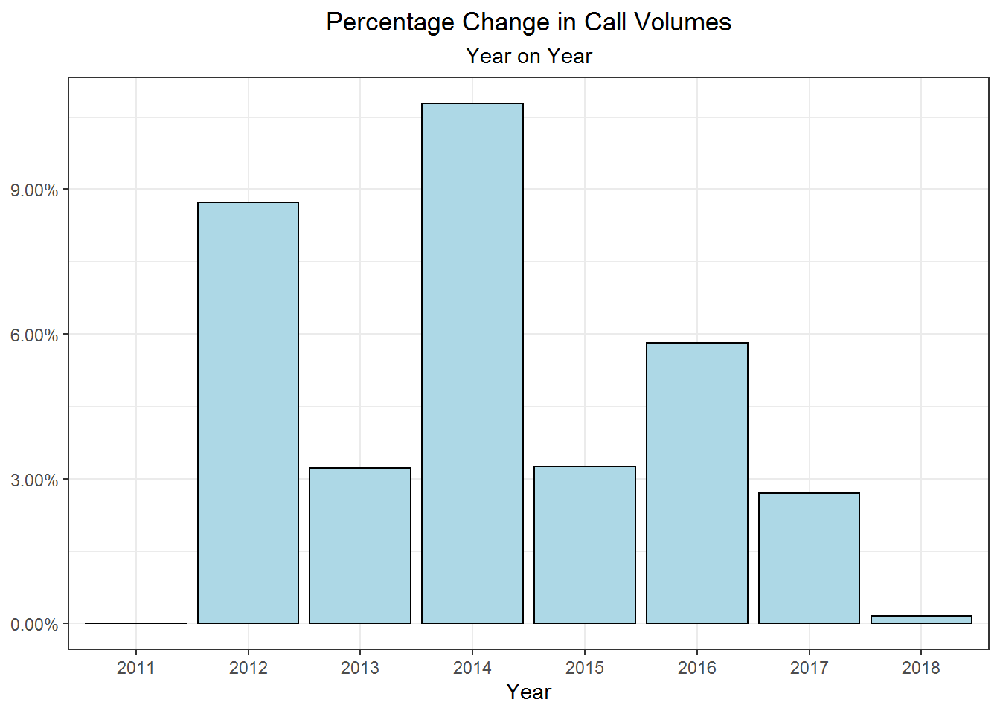

# Total calls in a given year with calculated change in percent from previous year
calls_per_year<- call_data %>%
filter(Year != 2019) %>% #Filtered out, only partial data
group_by(Year) %>%
summarise(calls = sum(calls)) %>%
mutate(perc_change = (calls - lag(calls))/lag(calls))
# Minimum and maximum percentage change
min_max <-calls_per_year %>%
filter(perc_change != 'NA')
a <- round(max(min_max$perc_change), 4) * 100
b <- round(min(min_max$perc_change), 4) * 100
# Overall percentage change in calls from 2011 - 2018
x <-calls_per_year %>%
filter(Year == '2011' | Year == '2018') %>%
mutate(perc_change = (calls - lag(calls))/lag(calls)) %>%
select(perc_change) %>%
filter(perc_change != 'NA')
overall <- round(x$perc_change,4) * 100According to the US Census Bureau the population in the city of Denver has a growth rate of 1.6% per year and the city has grown by just under 20% since 2010. As a natural consequence of this growth there has also been a steady increase in EMS calls. While the year on year percentage change in call volumes has fluctuated from a maximum growth of 10.77% in 2014 to a minimum rate of 0.16% in 2018, every year has seen positive growth and there has been an overall 39.71% increase in calls from 2011 - 2018.
# Commented out code generated the table, not otherwise shown
#call_data %>%
# group_by(Year) %>%
# filter(Year != 2019) %>%
# summarise(Calls = sum(calls)) %>%
# kable(format = 'html', escape = F) %>%
# kable_styling('striped', full_width = T) %>%
# add_header_above(c(" ", "Total Calls "))
# Plot of percentage change in total calls
cpy_plot <- calls_per_year %>%
replace_na(list(perc_change = 0)) %>% #No percentage change in starting year
ggplot(aes(x = Year, y = perc_change)) +
ggtitle("Percentage Change in Call Volumes", subtitle = 'Year on Year') +
theme_bw() +
theme(plot.title = element_text(hjust = 0.5), plot.subtitle = element_text(hjust = 0.5)) +
ylab(NULL) +
geom_col(fill = 'light blue', color = 'black') +
scale_y_continuous(labels = scales::percent)
cpy_plot
| Year | Calls |
|---|---|
| 2011 | 78262 |
| 2012 | 85088 |
| 2013 | 87835 |
| 2014 | 97293 |
| 2015 | 100458 |
| 2016 | 106292 |
| 2017 | 109164 |
| 2018 | 109342 |
The growth rate in call volumes has slowed in recent years with a negligable increase from 2017 to 2018. Whether or not this will be an ongoing trend remains to be seen. The fact remains there has been an increase in call volumes every year since 2011.
This growth in call volume will lead to an increased need for emergency medical personnel and the need to schedule that personel efficiently to mitigate the needs of the city.
# Creates a table with total calls in a given month for each year (not including partial 2019 data)
month_year <- call_data %>%
mutate(year = format(Date, "%Y"), month = format(Date, "%m")) %>%
filter(year != '2019') %>%
group_by(year, month) %>%
summarise(calls = sum(calls))
# Changing variable types for plotting. Year as the factor, month as numeric so ggplot knows to connect lines between months
month_year$year <- factor(month_year$year)
month_year$month <- as.numeric(month_year$month)
# Plotting calls by month per year, note year is the factor for coloring the lines
month_year_plot <- month_year %>%
ggplot() +
theme_bw() +
theme(plot.title = element_text(hjust = 0.5), plot.subtitle = element_text(hjust = 0.5)) +
geom_line(aes(x = month, y = calls, color = year)) +
scale_x_continuous(breaks = 1:12, labels = c(
"Jan", "Feb", "Mar", "Apr", "May", "Jun",
"Jul", "Aug", "Sep", "Oct", "Nov", "Dec")) +
ggtitle("Total Calls Per Month", subtitle = "Years 2011-2018") +
xlab(NULL) +
ylab("Total Calls")
# div() wrapper from shiny used to center plot when using ggplotly
# No subtitle in ggplotly, title and subtitle need to be created with HTML
div(ggplotly(month_year_plot) %>%
layout(title = list(text = paste0("Total Calls Per Month",
'<br>',
'<sup>',
"Years 2011-2018",
'</sup>')))) # All calculations and manipulation must be done before transposing for kable output
mean_per_month <- month_year %>%
group_by(month) %>%
summarise('Avg. Calls' = round(mean(calls), 0)) %>%
# Change month from dbl to factor for naming abbreviated months instead of 1:12
mutate_at(vars(month), list(factor), labels = c('Jan', 'Feb', 'Mar', 'Apr',
'May', 'Jun', 'Jul', 'Aug',
'Sep', 'Oct', 'Nov', 'Dec')) %>%
rename(' ' = month) %>%
t() %>% # transpose the table to get the months horizontial
kable(format = 'html', caption = "Mean calls per month, 2011-2018") %>%
kable_styling('striped')
mean_per_month| Jan | Feb | Mar | Apr | May | Jun | Jul | Aug | Sep | Oct | Nov | Dec | |
| Avg. Calls | 7687 | 7023 | 7961 | 7713 | 8308 | 8526 | 8721 | 8752 | 8396 | 8198 | 7504 | 7927 |
There are clear seasonal trends in call volumes which could lead to difficulty in optimizing personnel. Call volumes increase during the summer months which would suggest an uptick in staffing for that period is appropriate. As staffing paramedics on a seasonal basis is an unrealistic goal, either setting minimum staffing levels based on the busiest months or expansion of the part time employee pool are potential options.
Minimum staffing levels based on the busiest months is probably ideal, however you would only need those employees for the summer months. The remaining nine months of the year would potentially be overstaffed leading to increased overhead in salary and benefits. The workload for individual employees would be decreased in the slower months of the year which could lead to an increase in employee morale.
Expanding the pool of available part time employees increases the chances of availabilty to fill open shifts, particularly during the busiest times of the year. There is less associated overhead as employees are only paid for hours worked with minimal benefit considerations. One of the possible drawbacks of large numbers of part time employees as a solution to increased call volumes include the chance that there aren’t enough employees available or willing to cover the necessary shifts to meet demand.